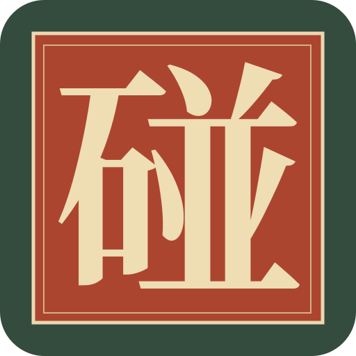

碰碰岛入画一战 ↗
六灵各有其形
朱衣狐灵、玄甲守、月中仙。
墨线、衣纹与云气，共入一幅画。
蓄势而后出手
独立的蓄力、出击与收势。
借墙弹射，用机关连起下一击。
随时入画一局
单人闯关、电脑对战、同屏双人。
无账号、无广告、无充值。

下载与安装
- 下载完成后打开 APK，按安卓提示允许当前浏览器安装应用。
- 已装旧版，请直接覆盖安装，保留原来的编队与关卡进度。
- 打开游戏即可离线游玩。若内置浏览器无法下载，请用系统浏览器打开本页。
安装包校验信息
SHA-256: 3f884b6271c50c749b9d1c1f07cf91b9d011193575a4efa5bd033a8aaff0d500